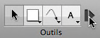
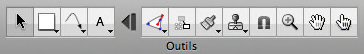

Astuces de la palette d’outils
Technologie du développer-condenser


OmniGraffle 5 intègre la technologie avancée du développer-condenser. Il existe un bouton, à côté de l’outil Texte par défaut, sur lequel vous pouvez cliquer pour condenser la palette d’outils en la rangeant dans les éléments tout à gauche. Ainsi, vous conservez de l’espace disponible précieux sur la barre d’outils pour d’autres boutons, mais vous pouvez toujours développer la palette et accéder aux autres outils lorsque vous en avez vraiment besoin.
Vous pouvez déplacer le séparateur dans les préférences Outils de dessin pour modifier quels outils sont disponibles lorsque la palette est condensée ou pour faire disparaître le bouton d’expansion.
Activation d’outil permanente
Par défaut, cliquer une fois sur un outil active celui-ci pour une seule utilisation ; une fois opéré, l’outil Sélection redevient actif. Une toute petite icône représentant un 1 bleu foncé apparaît sur l’outil pour vous le rappeler. 
Pour activer un outil de manière permanente, cliquez à nouveau dessus. L’icône disparaît pour indiquer que cet outil reste actif jusqu’à ce que vous en choisissiez un autre.
Vous pouvez modifier ce comportement dans les préférences Outils de dessin, afin que les outils soient toujours (ou jamais) activés de façon permanente.
Gestion d’un outil
Généralement, les inspecteurs sont utilisés pour modifier un objet sélectionné sur le canevas. Mais vous pouvez également les utiliser pour modifier le style des objets qu’un outil crée. Cliquez tout en appuyant sur la touche Option sur l’outil Forme, Crayon, Ligne ou Texte (ou cliquez simplement dessus, selon les préférences Outils de dessin) ; le bouton de l’outil est mis en surbrillance à l’aide de votre couleur de surbrillance pour montrer que vous êtes en train de le contrôler. 
Lorsque l’outil est en train d’être contrôlé, toute modification apportée s’applique à l’outil. Par exemple, si vous appliquez du rouge au contour de l’outil Ligne, chaque ligne que vous tracerez avec celui-ci présentera un contour rouge.
Vous pouvez toujours sélectionner Restaurer les valeurs par défaut dans le menu local de l’outil pour la réinitialiser.
Menus Style
Les outils Forme, Crayon, Ligne et Texte sont dotés de menus portant sur son style ; ceux-ci comportent différents styles que vous pouvez appliquer à l’outil. Cliquez sur le triangle au coin du bouton ou cliquez sur le bouton même tout en maintenant le bouton de la souris enfoncé afin d’ouvrir le menu. 
L’élément supérieur du menu correspond au dernier style que vous avez réglé.
OmniGraffle Pro inclut une liste Styles favoris à laquelle vous pouvez ajouter des styles que vous avez l’intention de réutiliser. Vous pouvez alterner librement entre le style actif en haut du menu et les styles de cette liste. Sélectionnez l’option Dupliquer le style pour ajouter une copie du style sélectionné à la liste des favoris. Sélectionnez Supprimer le style pour supprimer le style sélectionné de la liste. Vous pouvez également y ajouter des styles en cliquant sur un objet tout en appuyant sur la touche Contrôle ou en effectuant un clic droit dessus, puis en choisissant Ajouter aux favoris, ou encore en maintenant la touche Option enfoncée tout en faisant glisser un objet du canevas sur le bouton de l’outil.
La liste Styles de canevas présente les styles applicables éventuellement existants sur le canevas. Si vous en choisissez un, une copie de celui-ci remplace alors le style actif.
La liste Styles de patron affiche les styles disponibles à partir du patron ouvert. Si vous en choisissez un, une copie de celui-ci remplace alors le style actif.
Sélectionnez Contrôler le style pour que les inspecteurs portent leurs options sur l’outil même afin que vous puissiez en modifier le style.
Sélectionnez Restaurer les valeurs par défaut pour rétablir le style de l’outil à ses réglages les plus élémentaires.
Palette d’outils flottante
Si vous le souhaitez, vous pouvez ouvrir une fenêtre de palette d’outils séparée de celle de la barre d’outils ; il vous suffit de choisir Palette d’outils dans le menu Fenêtre. Faites glisser le coin de la palette d’outils flottante pour en modifier la forme, puis placez la fenêtre à côté de votre fenêtre de document pour l’y attacher magnétiquement.
Accès rapide aux outils
Au lieu de cliquer dessus, vous pouvez appuyer sur les touches de chiffres pour activer les outils. Chacune des touches de 1 à 0 correspond à un outil de la palette, de gauche à droite.
Vous pouvez également configurer des touches de raccourci dans les préférences Outils de dessin.